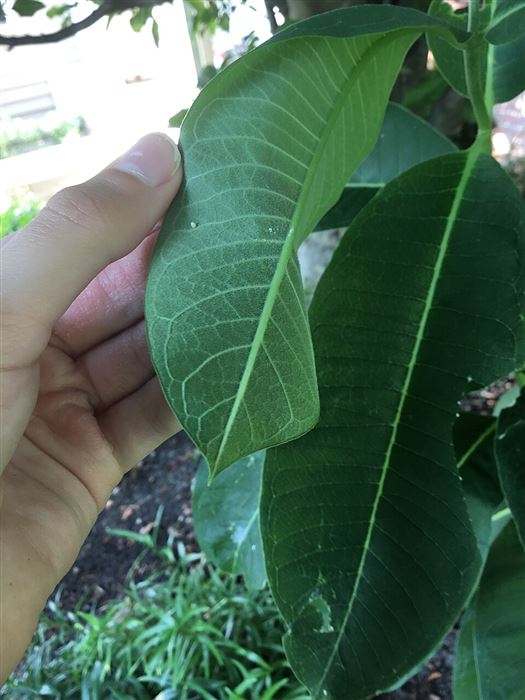
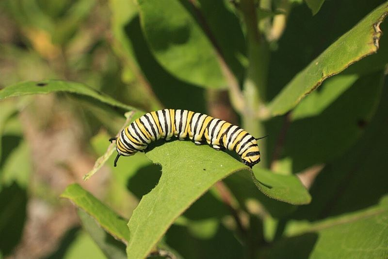
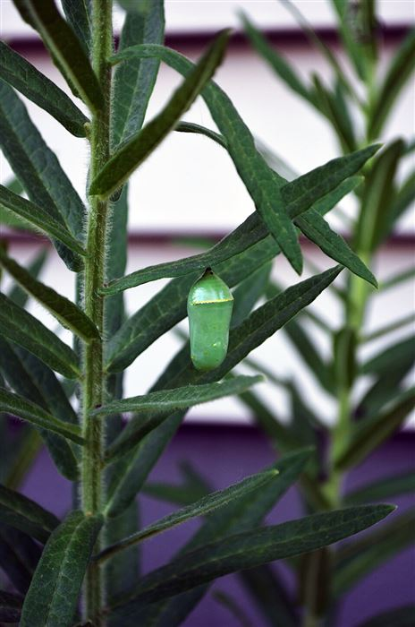
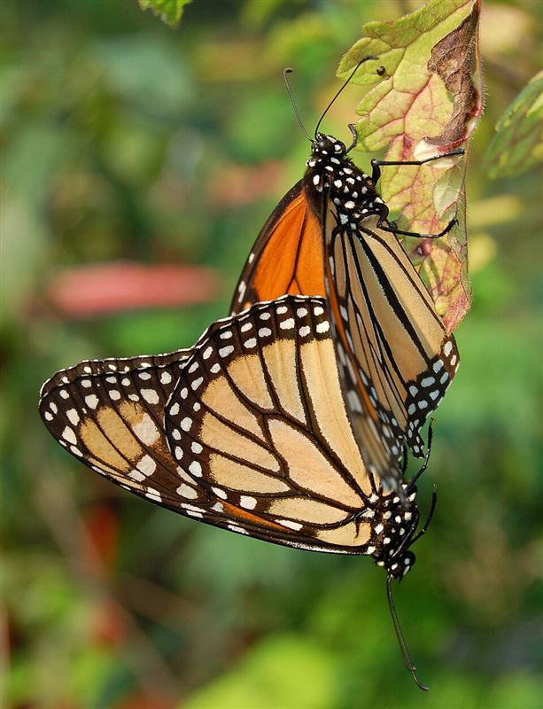

Ciclo de vida: la metamorfosis completa
Las mariposas atraviesan cuatro etapas de desarrollo. Este proceso, llamado metamorfosis completa, transforma por completo su cuerpo entre una etapa y la siguiente.

1. Huevo
Depositado sobre una planta hospedera específica.

2. Oruga (larva)
Se alimenta intensamente y crece mudando de piel.

3. Crisálida (pupa)
En su interior el cuerpo se reorganiza por completo.

4. Adulto
Emerge, seca sus alas y comienza a volar y alimentarse.
Huevo
La hembra elige con cuidado la planta donde pondrá los huevos: generalmente una planta hospedera específica que servirá de alimento a la futura oruga. El huevo es diminuto y puede tener forma ovalada o de cúpula según la especie.
Oruga (larva)
Al nacer, la oruga se dedica casi exclusivamente a comer hojas de la planta hospedera. Durante esta etapa crece rápidamente y muda de piel varias veces, ya que su exoesqueleto no se estira.
Crisálida (pupa)
Cuando alcanza su tamaño máximo, la oruga se fija a una rama o superficie y forma una crisálida. En su interior ocurre un proceso de reorganización celular profundo: el cuerpo se transforma casi por completo antes de emerger como adulto.
Adulto
La mariposa adulta emerge con las alas arrugadas y húmedas. Necesita tiempo para desplegarlas y secarlas antes de poder volar. En esta etapa se alimenta de néctar y, en el caso de las hembras, busca plantas hospederas para reiniciar el ciclo.
¿Sabías que...?
Algunas especies, como la mariposa monarca, completan varias generaciones cortas durante el año y una generación migratoria que puede vivir varios meses para viajar largas distancias.
Conocer la anatomía básica